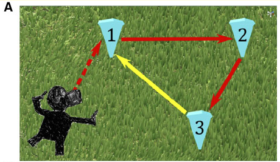
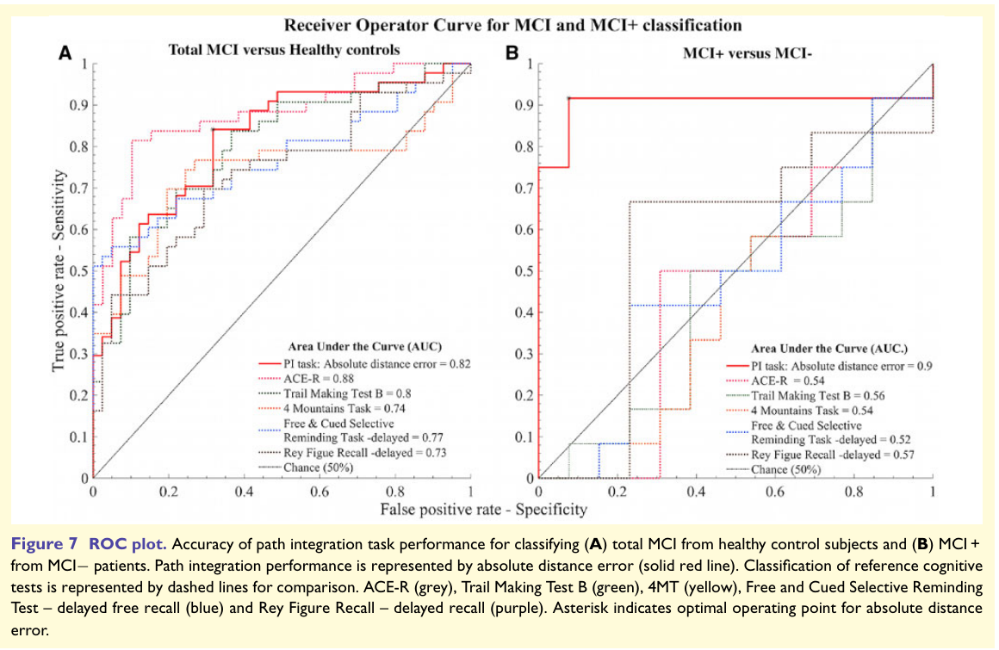

导航不是一种单一能力
沿着熟悉商店和路口走，记住连续转弯动作，利用地图寻找新路线，以及在缺少地标时估计自己距离起点多远，要求并不相同。一个人在其中一种任务表现较好，并不能保证其他方式也一样好。资料库应把导航任务拆成明确操作，而不是给所有迷宫游戏统一标上空间训练。
以自身为参照的方向描述，例如左转或前方，随身体朝向改变；环境中地点之间的关系则可以保持相对稳定。日常导航常混合这些方式。学习一条路线并不必然建立可从新起点使用的环境表征，因此从另一入口进入后能否找到目的地，是一个不同研究问题。
路径整合测量什么
路径整合指根据移动相关信息更新位置估计。教学例子是走过几段路以后，在没有明显地标的情况下判断起点方向。方向与距离误差都可能累积，实际导航通常还利用视觉地标及环境边界进行校正。
虚拟现实任务可以控制线索并记录返回位置，但设备提供的视觉移动、身体移动和前庭信息取决于具体设置。坐着用手柄移动与在空间中实际行走，不是同一种感觉条件。比较不同研究时必须登记设备和动作方式，否则“同为VR”也可能隐藏重要差异。
这种任务与内嗅皮层相关理论有联系，但并不意味着只由一个脑区完成。视觉、运动、注意、工作记忆及策略都可能参与。任务成绩可以成为有意义的行为指标，仍需要通过研究确认它与病理及其他认知过程的关系。
Howett研究的人群和比较
研究包括45名MCI参与者和41名健康对照。26名MCI参与者具有脑脊液AD标志物资料，其中12名阳性、14名阴性。这个分层很重要：并非所有MCI都有AD病理，也不是全部45名MCI都接受了相同的标志物确认。
研究使用沉浸式虚拟现实路径整合任务，并将行为表现与内嗅皮层体积及其他认知测验进行比较。它提供的是区分相关人群和探讨行为影像关系的资料，不是将参与者随机分配到训练组后观察改善的试验。
本资料库登记论文时使用DOI 10.1093/brain/awz116。检索页面也可能混入评论或其他条目的DOI，因此引用前必须核对作者、题名、卷页及标识符，而不是直接复制搜索片段中的第一个编号。
研究数据卡｜Howett 2019
样本、任务流程、平台阈值及分类结果已分别核对，下表给出索引。原PDF方法和结果、视觉核对与版本差异在后文展开；独立外部验证及完整方法审核尚未完成。
| 项目 | 已核实内容 | 核对范围与剩余问题 |
|---|---|---|
| 比较样本 | 45名MCI；41名健康对照 | 招募流程与排除原因 |
| MCI生物标志物子样本 | 26人有脑脊液数据 | 来自临床检查；子样本选择影响仍需评估 |
| 标志物分层 | 12人阳性；14人阴性 | 平台阈值已视觉核对，见后文 |
| 任务 | 沉浸式VR路径整合 | 真实步行、27正式试次和距离误差已提取 |
| 关联测量 | 内嗅皮层MRI体积 | 体积测量与区域方法仍需完整审核 |
| 研究性质 | 评估/分类比较 | 分类模型与区间已提取；外部验证尚未完成 |
能区分样本不等于可直接用于个人筛查
分类表现取决于比较人群、病例定义、阈值与验证方式。研究中的病理阳性MCI与病理阴性MCI比较，与普通社区中寻找未来病例不同。后者病理比例、其他疾病和能力分布可能不同，即使某个准确性指标看起来相近，阳性结果的实际含义也可能改变。
若阈值在同一小样本上选择并评价，表现还可能过于乐观。独立外部验证、前瞻随访和临床流程比较是后续需要的证据。这里不将论文任务变成个人自测诊断，也不把游戏中迷路解释为AD。
视力、运动、晕动不适、技术熟悉程度和任务理解也应记录。排除无法完成设备任务的人可以提高研究可控性，却可能减少对真实使用人群的代表性。研究可行性与社区可用性需要分别检验。
风险关联、预测与预防是三个命题
导航表现与某种病理或风险因素相关，说明它可能提供线索；表现预测以后下降，需要纵向资料；练习导航降低以后疾病风险，需要干预研究。这三个命题不能由同一个横断面结果一次性证明。
即使提高导航成绩，也可能来自熟悉环境、学习地标或掌握操作。要检验迁移，需要新的环境、不同线索安排和独立结局。要检验生活意义，可以研究实际定向、出行能力及适当功能指标；要检验AD预防，则需明确病理或诊断终点及足够长的随访。
任务接近早期易损功能，是合理的研究出发点，但不能推出练得越多就越能保护相关组织。这种推断还缺少训练是否改变病程的直接桥梁。
如何把导航游戏变成可研究的方案
应记录地图规模、地标数量、线索是否稳定、起点变化、目标可见性和是否允许重复探索。不同条件可以改变路线记忆、环境关系学习和位置更新的相对需求。每次只提高一个明确维度，有助于解释玩家进步来自哪里。
指标也应比通关时间丰富。返回距离误差、方向误差、绕行距离、错误转弯和提示使用，回答不同问题。若允许速度和准确度互相交换，必须解释这种策略，而不是把所有变化汇成一个“大脑年龄”。
日常研究界面应让读者看到任务说明、原文、样本和结论范围，再连接到训练假设。导航研究的价值在于更精确地定义可测试过程；目前收录的这项原始研究并未证明导航游戏预防AD。
原文任务流程｜不是坐着看迷宫
研究使用真实步行对应虚拟移动的沉浸式VR，在约3.5米见方的追踪空间内进行。参与者按顺序走到三个位置标记，再返回记忆中的第一个位置，按控制器记录估计位置。
练习包含熟悉环境与五次有反馈试次，正式任务在三个环境中各九次，共27次。返回阶段分别保持环境、移除边界或移除地面细节。这个流程与屏幕迷宫的感觉和动作条件不同，不能直接视为同一种训练。
| 环节 | 原文安排 |
|---|---|
| 动作 | 真实步行与虚拟移动对应 |
| 路径 | 顺序到三个标记，返回第一个位置 |
| 练习 | 熟悉环境及五次反馈 |
| 正式试次 | 三环境各九次，共27次 |
| 条件 | 不变、移除边界、移除表面细节 |
| 主要测量 | 估计与实际位置的欧氏距离 |
误差分解的价值
主要距离误差汇总最后估计位置偏离多少。角度和线性相关误差则尝试区分转向与距离估计。它们不完全相同，因此只用总通关时间会丢掉研究关心的信息。
环境线索移除是任务操作，目的在改变可利用的信息。它不保证只有内嗅皮层参与，更不是直接对脑区施加精准训练。研究者的网络解释需要与操作及测量分开。
如果未来设计网页任务，可以借鉴误差记录，却不能借用该VR版本的诊断性能。动作、设备和线索改变后，应重新验证。
研究盲法与病理分层
26名MCI的脑脊液资料来自临床诊断流程，其余19名没有进行相应检查。实施VR测试者不知道脑脊液状态，这有助于减少分层信息对任务实施的影响。
没有检测的19人不能被填成阴性，也不能让26人分层结果代表全部45人。研究排除严重影响任务的视觉与行动问题，因此可完成VR的样本与真实社区全部人群仍有差距。
原PDF脑脊液阈值中的大小关系符号已视觉核对，见下方阈值表。对不同平台或人群是否适用，仍需另行验证。
AUC如何解释
原文摘要报告标志物阳性与阴性MCI区分的导航AUC为.90，最佳比较认知测试AUC为.57。AUC评价排序区分表现，不等于90%的个人未来会发病，也不是某个固定阈值的阳性预测值。
分类模型调整项、十折交叉验证、bootstrap及AUC区间已经核对，后文同时记录其宽区间与参考测试图文差异。内部验证仍不能代替新样本的外部验证。
本页研究图的开放许可已核实并保留归属。图和模型用于解释识别研究，不能将分类结果当作训练疗效。
PDF视觉核对｜原文第1753页阈值
已将开放PDF页面渲染并视觉检查，确认原文不是文本抽取中的乱码数值：脑脊液amyloid小于550 pg/ml、Tau大于375 pg/ml，Tau与amyloid比值大于0.8。原文使用特定ELISA平台，不能移作其他平台或个人自诊阈值。
这次核对同时确认Hachinski缺血评分排除条件为大于4。研究还排除严重影响VR的视觉或行动问题，因此分类结果适用范围需要保留这些选择条件。
这次核对排除了文本抽取中大小关系符号被误读为数字的问题；分类模型与区间见后文。图文差异与平台适用性仍分别保留，不因一个符号核对完成而宣布整个研究全部验证。
| 原文变量 | 视觉核实表达 | 范围 |
|---|---|---|
| CSF amyloid | <550 pg/ml | 该研究平台与流程 |
| CSF Tau | >375 pg/ml | 该研究平台与流程 |
| Tau:amyloid | >0.8 | 原文分层条件 |
| Hachinski评分 | >4为排除条件 | 研究入组限制 |
原始PDF｜AUC区间与模型核对
原文第1757页说明分类模型调整年龄、性别和教育，并采用十折交叉验证；交叉验证后的概率用于ROC分析，区间采用1000次bootstrap。第1761页报告，按绝对距离误差区分标志物阳性与阴性MCI的AUC为0.90，区间0.59至1。
研究解读：点估计较高，但区间宽，提醒我们样本精度有限。交叉验证帮助检查同一资料内的模型表现，不能代替独立中心或新参加者的外部验证。
这也不同于随访预测未来AD发生。模型识别的是研究内的分组，不是一个人未来患病的百分比，更没有实施训练。导航任务与相关脑区的联系为后续任务设计提供依据，预防效果需要另行验证。
| 字段 | 原始PDF记录 | 解释 |
|---|---|---|
| 分类对象 | 标志物阳性 vs 阴性MCI | 不是健康大众终身风险 |
| 指标 | AUC0.90；CI0.59至1 | 点估计与不确定性同时记录 |
| 模型调整 | 年龄、性别、教育 | 不表示全部背景一致 |
| 内部验证 | 十折交叉验证 | 不等同于外部重复 |
| 区间生成 | 1000次bootstrap | 仍受小样本与模型影响 |
结果页视觉核对｜阈值和图文差异
直接查看原PDF第1761页，标志物阳性与阴性MCI比较的距离误差阈值为≥196厘米，对应敏感度与特异度均为0.92。页面上方的≥157厘米属于全部MCI与健康对照的另一项比较，不能用于前者。
同一页图7图例与正文对某些参考测试AUC列值不同。例如图7B图例TMT-B为0.56，正文为0.57；图7A图例ACE-R为0.88，正文为0.86。本库记录该版本差异，不擅自选择更有利数值。路径整合的0.90在该页正文与图7B一致。
研究解读：阈值是在该研究资料和模型下选定的操作点。它不是可以直接应用于手机游戏或个人自测的通用诊断标准。任务设备、真实行走、样本与建模条件改变后，需要重新验证。
| 比较 | 视觉核对阈值 | 报告表现 |
|---|---|---|
| MCI+ vs MCI− | 绝对距离误差≥196厘米 | 敏感度0.92；特异度0.92 |
| 全部MCI vs 健康对照 | 误差≥157厘米 | 敏感度0.84；特异度0.68 |
| 图7B TMT-B | 图例0.56／正文0.57 | 图文差异待裁决 |
| 图7A ACE-R | 图例0.88／正文0.86 | 图文差异待裁决 |
原文任务图｜路径整合

原文结果图｜ROC与两种分类比较


引用来源与读取范围
- S88 · Howett 等（2019）：使用虚拟现实导航区分轻度认知障碍 ↗2019 · 人类导航任务与影像比较研究 · 摘要及 PMC 原文入口；正确DOI 10.1093/brain/awz116；45名MCI与41名对照，26名MCI有脑脊液标志物资料。不是训练试验。
- S11 · Coughlan 等：空间导航与阿尔茨海默病 ↗2018 · 专题综述 · 摘要与可访问概要
- S97 · Howett2019导航研究：作者机构保存的开放PDF ↗2019 · 原始论文全文版本 · 开放PDF · CC BY4.0；PDF首页核实CC BY 4.0，与S88同一研究。2026-10-10读取任务与盲法，视觉核对1753页平台阈值和1761页分类阈值；1757/1761页模型及AUC区间已提取。保留图7参考测试AUC与正文差异；外部验证与完整方法审核未完成。；许可：CC BY 4.0；图1A裁取，原作者归属保留